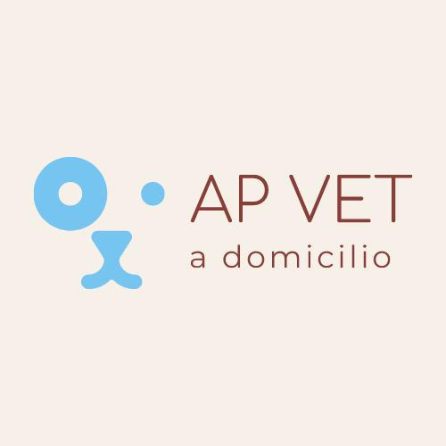

Inicio
Sobre AP Vet
Servicios
Pacientes
Contacto
AP Servicios
Atención clínica a domicilio
Certificados de salud
Ecografías
Especialista en reproducción animal
Primera consulta para el cachorro
Colocación de micro chip
Estudios complementarios